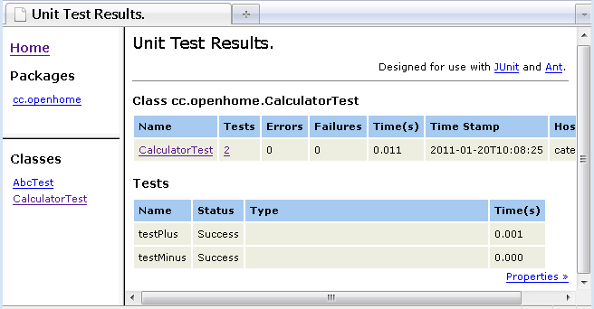

|
|
可以將JUnit的測試過程在Ant建構的過程訊息中顯示出來，只要加入<formatter>標籤設定即可： .... <target name="test" depends="compile"> <junit printsummary="yes"> <formatter type="plain" usefile="false"/> <batchtest> <fileset dir="${src.dir}" includes="**/*Test.java"/> </batchtest> <classpath> <pathelement location="${bin.dir}"/> <pathelement location="${junit.dir}"/> </classpath> </junit> </target> .... 一個執行的訊息範例如下： ... test: [junit] Running cc.openhome.AbcTest [junit] Testsuite: cc.openhome.AbcTest [junit] Tests run: 1, Failures: 0, Errors: 0, Time elapsed: 0.019 sec [junit] Tests run: 1, Failures: 0, Errors: 0, Time elapsed: 0.019 sec [junit] [junit] Testcase: testAbc took 0.005 sec [junit] Running cc.openhome.CalculatorTest [junit] Testsuite: cc.openhome.CalculatorTest [junit] Tests run: 2, Failures: 0, Errors: 0, Time elapsed: 0.005 sec [junit] Tests run: 2, Failures: 0, Errors: 0, Time elapsed: 0.005 sec [junit] [junit] Testcase: testPlus took 0.002 sec [junit] Testcase: testMinus took 0 sec ... 當usefile屬性預設值為true，會自動幫您將產生的結果儲存在檔案中，預設是TEST-*.txt，儲存於執行ant指令的目錄，其中*是您的測試案例類別名稱，有幾個測試類別就產生幾個.txt，可以在<test>或<batchtest>上使用todir屬性指定儲存位置。就上例而言，其產生的報告檔案TEST-cc.openhome.CalculatorTest.txt內容如下： Testsuite: cc.openhome.CalculatorTest
Tests run: 2, Failures: 0, Errors: 0, Time elapsed: 0.005 sec Testcase: testPlus took 0.001 sec Testcase: testMinus took 0 sec <formatter>標籤還可以設定將測試的結果，以XML文件儲存下來，只要指定type屬性為xml即可，會將測試的結果儲存至report目錄中，檔案名稱為TEST-*.xml，*是您的測試案例類別名稱。 可以將測試結果所產生的XML文件轉換為HTML文件，<junitreport>標籤使用 XSLT將XML文件轉換為HTML文件，一個撰寫的例子如下所示： <project name="example" default="report"> <include>設定搜尋TEST-*.xml文件，將之轉換為HTML文件，而最後的結設定儲存至 report/html/目錄下，format屬性中設定HTML文件具有框架，如果不設定這個屬性則HTML報告文件就不具有框架，上例所產生的 HTML文件如下：  |